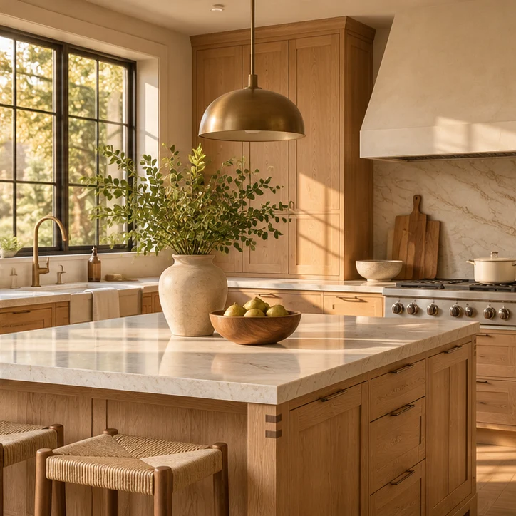

Illinois property services
Remodeling & repairs
Plan a room update, refresh a finish or pull together a list of home repairs. Get It Done LLC handles remodeling, painting, roofing and handyman work.

Scope of work
- Remodeling
- Start with the room and how you want to use it. Identify what you want to keep, what needs to change and any finishes you already have in mind.
- Painting
- List the surfaces you want painted, such as walls, ceilings or trim. Room dimensions, current finishes and color choices help describe the work.
- Roofing
- Describe the area that needs attention and any changes you have noticed. Photos taken from the ground or inside the house can help illustrate the concern.
- Handyman work
- Group small repairs by room or area. A short list with one photo per item makes it easier to describe several jobs together.
Planning your project
For a room project, gather a few photos, approximate measurements and your preferred timing. For several repairs, mark which items you want tackled first.